- A control system in which control action is somehow dependent on output is known as
In the closed loop control system, we take the feedback from the output side and based on the error that is the comparison of the reference point and present output, we are feeding that error into the input of the controller to get that desired output. So, in closed loop control system, the control action must be dependent on the output.
- Which of the following increases with the feedback?
If we want to achieve the stable operation in a system, we need to reduce the system error. This error is nothing but the difference between the reference point and the present output. So, the feedback is used to calculate the present error and it is used to feed that error into the controller. Thereby we can be reduced the error in the output. Hence, the stability of the system is increased when we are reduced the error by using feedback technique.
- In case of an open loop control system which of following statement is true?
In the open loop control systems, we are simply given the input to the controller. So, due to the environmental or human error, the output can be changed. This error is not at all controlled in the input side of the controller. Hence, the output of the open loop system is always independent of the control input.
- Which of the following is an open loop control system?
In the open loop control system, the control parameter of a control system is assigned by operator manually. For a field controlled DC motor, the control parameters are the voltage and the load. If we want to set a specific speed, we have to adjust the voltage or the load by doing the manual adjustment on those parameters. But due to some errors on the load side or the voltage side the speed may be varied. That variation cannot be controlled automatically at this moment. But, we can be controlled the error by manual actions. Hence, the field controlled DC motor is the best example for the open loop control system.
- Mass in force-voltage analogy is analogous to
The stored energy in the mass in force voltage analogy is
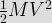
The stored energy in the inductor in electrical analogy is

Hence, the mass in force voltage analogy is analogous to inductance. - Phase margin is used to specify which of the following
Basically the phase margin and gain margin are used to find out the relative stability of the system when we are working in the frequency domain. In phase margin, we can be measured the angular difference between the point on the frequency response at the unit circle crossing and - 180°. If the system have at least 40° of phase margin, then the relative stability of the system is good.
- Routh Herwitz criterion provides:
According to the Routh Hurwitz stability criterion, for a stable system, it should have the following characteristics equation. So, we just take a second order system for this example.
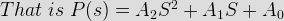
Here A2, A1 and A0 should be greater than zero. So, if we find the value of ‘S’ for any value of the A2, A1 and A0, the roots can be became as negative value. Hence, the roots are in left half of the s plane (or) negative half of the s plane. - ___________ has the tendency to oscillate.
In a closed loop control system, if the loop gain increases, then the loop becomes more oscillatory and disturbances which takes long time to die out. Finally, the loop gain can be reached where the disturbances will never die out and hence the loop still continuously oscillates. So, the closed loop control system has the tendency to oscillate. In order to maintain loop stability, the gain or sensitivity of the loop must be sufficiently low at the critical frequency.
- Steady state stability limit is
If increase in the error in the output side and the system withstands this change and performs satisfactorily, then the system is said to be in steady state stability. Transient stability is a fast phenomenon, usually occurring within one second due to the error. Hence, the time taken by the steady state stability limit is always greater than the transient stability limit.
- The steady-state stability limit of a synchronous generator can be increased by
When we are adding more and more load in the synchronous generator, the generated voltage also gets reduced. At one particular time, the generator may lose the synchronism from the grid bus bar. So, there must be the occurrence of steady state stability problem. Hence, to improve this steady state stability limit, we can be increased the excitation of the machine. Thereby the synchronous generator maintains the same bus bar voltage and it does not lose the steady state stability.
- Transfer function of a zero-order-hold system is
The zero-order hold is the simplest reconstruction circuit and it assumes zero processing delay in converting between digital to analog. Hence, from the equation (1 / sT) × (1 – e-sT) we can achieve zero processing delay. This Laplace transformed equation is converting a discrete time signal to a continuous time signal by holding each sample value for one sample interval.
- A system is denoted as dy / dt + 2y = 4tu ( t ), the ramp component in the forced response will
[ (2S + 1) / (S2) ] / [ 1 + (2S + 1) / (S2) ] = [ (2S + 1) / (S2 + 2S + 1) ].
- The steady state error of a stable type 0 unity feedback system, for a unit step function is
The steady state error of a stable type 0 unity feedback system is
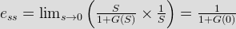
The static position error constant KP is defined by
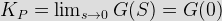
Thus, the steady state error in terms of the static position error constant KP of a stable type 0 unity feedback system is given by
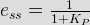 - The no. of roots of S3 + 5S2 + 7S + 3 = 0, in the right half of the s-plane is
According to the Routh Hurwitz criteria, the negative term is not present in the given characteristics equation. Hence, the system is stable. So, in a stabilized system, no roots present in the right half of the S-plane. Thus, zero roots are present in the right half of the S-plane.
- Sinusoidal oscillators are
In a sinusoidal, it does not reach the final steady state value at all time. It still oscillates continuously. Hence, the system tends to unstable. So, the sinusoidal oscillators are unstable signal generators.
- If the gain of the open loop system is doubled, the gain margin
If the ARC be the value of the gain of the open loop system at a critical frequency ωC, then the gain margin GM is defined as
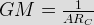
Hence, if the gain of an open loop gain gets doubled, then the gain margin becomes half. - Phase margin of a system is used to specify
Basically the phase margin and gain margin are used to find out the relative stability of the system when we are working in the frequency domain. In phase margin, we can be measured the angular difference between the point on the frequency response at the unit circle crossing and - 180°. If the system have at least 40° of phase margin, then the relative stability of the system is good.
- Transfer function G ( s ) = ( s + a ) / ( s + b ), at what value the phase of lead compensator is maximum ?
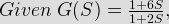
In phase lead compensator,
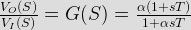
By comparing this equation and given equation, we have T = 6 and αT = 2;
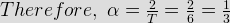
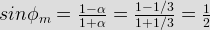
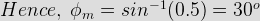 - A linear discrete-time system has the following characteristic equation, z3 – 0.81 z = 0, so The system is
The given characteristics equation is z3 – 0.81 z = 0 => z (z2 – 0.81) = 0. So, the roots are z1 = 0; z2 = 0.9; z3 = 0.9. Hence, all roots of the above equation lie inside the unit circle. That means the roots are less than one. Thus, the system is stable.
- For making an unstable system stable
If a system is unstable, then the poles are presented in the right hand side of the s-plane. So, if we increase the gain of the systems, then there is a chance of shifting the poles from the right hand side of the s-plane to the left hand side of the s-plane. Therefore, we know that the system will be stable no matter how much we increase the gain. However, if we decrease the gain, the diagram will contract and the system might become unstable.
Design with  by SARU TECH
by SARU TECH
www.sarutech.com
Content Credited to electrical4u.com
Online Electrical Engineering Study Site